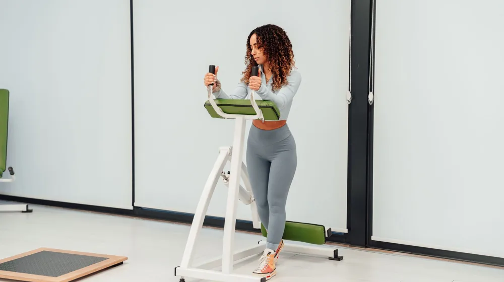

홈트레이닝, 이것만 알면 시작 준비 끝! 초보자 자주 묻는 질문 총정리
사진: Berna / Pexels (무료 이미지, 출처 표기)
홈트레이닝, 과연 효과가 있을까?

홈트레이닝을 시작하려는 많은 분들이 가장 먼저 궁금해하는 질문은 바로 '정말 효과가 있을까?'입니다. 결론부터 말씀드리면, 제대로 된 방법으로 꾸준히 한다면 헬스장 운동 못지않은 충분한 효과를 볼 수 있습니다.
근력 향상, 체지방 감소, 유산소 능력 개선 등 운동 목표에 맞춰 맨몸 운동, 요가, 필라테스, 고강도 인터벌 트레이닝(HIIT) 등 다양한 방식의 운동을 선택할 수 있습니다. 중요한 것은 본인의 신체 상태와 목표에 맞는 프로그램을 선택하고, 정확한 자세로 꾸준히 실천하는 것입니다.
필수 홈트레이닝 장비, 현명하게 고르는 법
홈트레이닝을 시작할 때 값비싼 장비를 먼저 구매해야 할지 고민하는 경우가 많습니다. 하지만 처음부터 많은 장비가 필요한 것은 아닙니다. 2026년 10월 기준으로 기본적인 맨몸 운동만으로도 충분히 효과를 볼 수 있습니다.
필요에 따라 최소한의 장비를 구매하는 것을 추천합니다. 가령 요가 매트, 밴드, 덤벨 등은 운동의 종류와 강도를 다양화하는 데 큰 도움이 됩니다. 아래 표를 참고하여 자신에게 필요한 장비를 선택해보세요.
필요한 경우 운동 앱이나 온라인 강의 등을 활용하면 보다 체계적인 지도를 받을 수 있습니다. 장비 구매 전에는 리뷰를 충분히 확인하고, 가격 대비 효율성을 고려하는 것이 중요합니다.
운동 시간과 빈도, 나에게 맞는 기준 찾기
홈트레이닝의 효과를 극대화하기 위해서는 적절한 운동 시간과 빈도를 설정하는 것이 중요합니다. 일반적으로 전문가들은 주 3~5회, 한 번에 30분~1시간 정도의 운동을 권장합니다.
하지만 이는 일반적인 권장치일 뿐, 개인의 체력 수준과 목표에 따라 달라질 수 있습니다. 처음에는 주 2~3회, 20~30분 정도로 시작하여 점진적으로 운동 시간과 강도를 늘려나가는 것이 좋습니다. 특히 고강도 인터벌 트레이닝(HIIT, 짧은 시간 고강도 운동과 휴식을 반복하는 운동)의 경우, 짧은 시간으로도 높은 칼로리 소모와 운동 효과를 얻을 수 있어 바쁜 현대인에게 효과적입니다.
부상 없이 안전하게 홈트레이닝 하는 노하우
홈트레이닝은 헬스장보다 자유롭지만, 전문가의 지도가 없어 부상 위험에 노출될 수 있습니다. 부상을 예방하기 위해서는 다음 사항들을 반드시 지켜야 합니다.
- 준비 운동과 정리 운동 필수: 본 운동 전후 5~10분간 스트레칭과 가벼운 유산소 운동으로 근육을 풀어주고 이완시켜야 합니다.
- 정확한 자세 숙지: 유튜브나 운동 앱 등 신뢰할 수 있는 자료를 통해 각 동작의 정확한 자세를 미리 익히고, 거울을 보며 자세를 확인하는 것이 좋습니다.
- 무리한 운동 피하기: 통증이 느껴진다면 즉시 운동을 중단하고 휴식을 취해야 합니다. 통증을 참고 운동하는 것은 부상으로 이어질 수 있습니다.
- 충분한 수분 섭취: 운동 중과 후에 충분한 물을 마셔 탈수를 예방하고 신체 기능을 유지하세요.
- 적절한 휴식: 근육은 운동 후 회복 과정에서 성장합니다. 주 1~2회는 운동을 쉬어 근육이 충분히 회복할 시간을 주어야 합니다.
만약 운동 중 지속적인 통증이나 이상 증상이 있다면, 즉시 전문가의 진단을 받는 것이 중요합니다.
홈트레이닝 효과 높이는 식단 관리 팁
운동만큼 중요한 것이 바로 식단 관리입니다. 홈트레이닝의 효과를 극대화하고 건강을 유지하기 위해서는 균형 잡힌 식단이 필수적입니다.
단백질 섭취를 늘려 근육 성장을 돕고, 복합 탄수화물로 꾸준한 에너지를 공급하며, 건강한 지방으로 신체 기능을 지원하는 것이 좋습니다. 가공식품, 설탕, 트랜스 지방 섭취는 최소화하고 신선한 채소와 과일을 충분히 섭취하세요. 구체적인 식단 계획은 개인의 활동량과 목표에 따라 달라지므로, 필요하다면 영양 전문가와 상담하는 것을 권장합니다. 2026년 10월 기준, 건강한 식단 관련 정보는 보건복지부나 식품의약품안전처 웹사이트에서 확인할 수 있습니다.
꾸준함이 핵심! 동기 부여 유지 전략
홈트레이닝은 헬스장과 달리 스스로 동기를 부여하고 이끌어 나가야 합니다. 꾸준함을 유지하기 위한 몇 가지 전략을 소개합니다.
- 명확한 목표 설정: '몇 kg 감량', '턱걸이 몇 개' 등 구체적이고 달성 가능한 목표를 세우면 동기 부여에 도움이 됩니다.
- 작은 성공 경험: 처음부터 무리한 목표보다는 작은 목표를 설정하고 달성하며 성취감을 느끼는 것이 중요합니다.
- 운동 기록: 운동 일지를 작성하거나 앱을 활용하여 운동 내용, 시간, 변화 등을 기록하면 자신의 발전 과정을 시각적으로 확인하며 동기를 강화할 수 있습니다.
- 다양한 운동 시도: 한 가지 운동만 고집하기보다 다양한 종류의 운동을 시도하여 지루함을 줄이고 흥미를 유지하세요.
- 보상 시스템: 목표 달성 시 스스로에게 적절한 보상을 주는 것도 좋은 방법입니다. (예: 새 운동복 구매, 맛있는 건강식 먹기)
- 함께 하는 운동: 가족이나 친구와 함께 운동하거나, 온라인 커뮤니티를 통해 정보를 공유하고 서로를 격려하는 것도 큰 힘이 됩니다.
🔗 이 글도 함께 보면 좋아요: 비밀번호 관리자 앱, 이것만 알면 끝? 헷갈리는 5가지 질문 완벽 정리
관련 추천 상품
홈트레이닝 기구, 요가매트, 덤벨 세트 관련 인기 상품 보러가기
이 포스팅은 쿠팡 파트너스 활동의 일환으로, 이에 따른 일정액의 수수료를 제공받습니다.
자주 묻는 질문(FAQ) (탭하면 펼쳐져요)
Q1. 홈트레이닝, 정말 효과가 있나요?
A. 네, 제대로 된 방법으로 꾸준히 한다면 헬스장 운동 못지않은 충분한 효과를 볼 수 있습니다. 근력 향상, 체지방 감소, 유산소 능력 개선 등 목표에 맞춰 맨몸 운동, 요가, HIIT 등 다양한 운동을 선택하고 정확한 자세로 실천하는 것이 중요합니다.
Q2. 홈트레이닝 장비, 꼭 사야 하나요?
A. 처음부터 많은 장비가 필요한 것은 아닙니다. 기본적인 맨몸 운동만으로도 충분히 효과를 볼 수 있습니다. 필요에 따라 요가 매트, 밴드, 저중량 덤벨 등 최소한의 장비를 구매하여 운동의 종류와 강도를 다양화하는 것을 추천합니다. 장비 구매 전에는 리뷰와 효율성을 충분히 고려하세요.
Q3. 운동 시간은 얼마나 해야 효과적인가요?
A. 일반적으로 주 3~5회, 한 번에 30분~1시간 정도의 운동이 권장됩니다. 하지만 개인의 체력과 목표에 따라 달라질 수 있으므로, 처음에는 주 2~3회, 20~30분으로 시작하여 점진적으로 시간과 강도를 늘려나가는 것이 좋습니다.
Q4. 홈트레이닝 중 부상을 피하려면 어떻게 해야 하나요?
A. 부상을 예방하기 위해서는 준비 운동과 정리 운동이 필수이며, 유튜브나 앱 등을 통해 각 동작의 정확한 자세를 숙지해야 합니다. 통증이 느껴지면 즉시 운동을 중단하고, 충분한 수분 섭취와 적절한 휴식을 취하는 것도 중요합니다.
Q5. 홈트레이닝과 함께 식단 관리, 어떻게 시작하죠?
A. 운동 효과를 높이려면 균형 잡힌 식단이 필수입니다. 단백질 섭취를 늘리고, 복합 탄수화물과 건강한 지방을 충분히 섭취하며, 가공식품과 설탕 섭취는 최소화하세요. 신선한 채소와 과일을 많이 먹는 것이 좋고, 필요하면 영양 전문가와 상담하는 것을 권장합니다.
Q6. 꾸준히 홈트레이닝을 할 수 있는 방법은 무엇인가요?
A. 명확한 목표 설정, 작은 성공 경험, 운동 기록, 다양한 운동 시도, 목표 달성 시 적절한 보상, 그리고 가족이나 친구와 함께 운동하는 것이 꾸준함을 유지하는 데 도움이 됩니다.